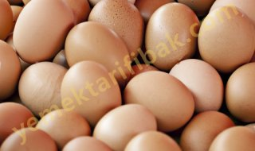

Yumurta Hakkında Bilmeniz Gerekenler
Yumurta Hakkında Bilmeniz Gerekenler
Yumurta
Çok zengin besin maddelerinden biri de yumurtadır. İçinde E,K,B bir, B altı, B iki, B oniki ve PP gibi çeşitli vitaminler ve başta fosfor, demir ve kalsiyum olmak üzere bir çok madensel tuzlar bulunur. Protein yönünden zengindir. 60 gramlık bir tek yumurta 60 kiloluk insanı bir gün beslemeye yetiyor. Lipid yapmaz.
Yumurtanın Faydaları:
Organizmanın madensel tuz ve vitamin İhtiyacını karşılar.
Yapısındaki B vitamin bileşikleri sayesinde sinir sistemini düzenler, zihin yorgunluklarını giderir.
Kasları güçlendirir,
Yenilen besinlerin sindirilmesini kolaylaştırır.
Şekerin bir an önce kana karışmasını sağlar. Gözdeki retina tabakasını güçlendirir.
Kemikleri geliştirir. Çocukların büyümesini ve gelişmesini kolaylaştırır.
Dokuları besler.
Nasıl Alacaksınız?
Taze yumurta ne kadar yararlıysa, bayatı da o kadar zararlıdır. Bir yumurtanın taze olup olmadığım şu şekilde anlıyabilirsiniz:
1- Yumurtanın içinde "hava odası" denen bir boşluk vardır. Yumurtayı güneşe doğru tutun ve bu boşluğa bakın. Boşluk büyükse yumurta bayat, küçükse tazedir. Aynı şeyi bir mum yardımıyla da yapabilirsiniz.
2- Yumurtayı içi tuzlu su dolu bir kaba atın. Eğer dibe çökerse çok tazedir. Bu yu-
murtayı rafadan yiyebilirsiniz.
3- Yumurta suyun ortalarında ise fazla bayat değil. Bu yumurtayı ancak yağda pişirerek yiyebilirsiniz.
4- Yumurta suyun yüzünde dalgalanıyorsa yapacağınız ilk iş onu atmak olmalıdır.
5- Yumurtanın çok tazesi de makbul değildir. Evinizde tavuğunuz varsa, yumurtayı tavuktan çıkar çıkmaz tüketmeyin. İki üç gün bekletin.
Nasıl saklayacaksınız?
Satın aldığınız yumurtalar çok taze ise serin bir yerde bir hafta, buzdolabınızda ise üç hafta saklıyabilirsiniz. Yumurta mutlaka ışık almayan bir yerde saklanır.
Bir çatalla şansını ve beyazını birbirine karıştırın. Üstüne azıcık süt ya da su katın. Böylece sindirimi daha kolay ve daha lezzetli bir omlet yapmış olursunuz.
Yumurtanın sarısında daha çok kolestrol bulunur. Akındaki kolestrol miktarı ise çok azdır. Bu nedenle Roy Walford, yumurtanın sarısı yerine akının yenmesini öneriyor. Ve "omletinizi bir yumurta sarısı, ama üç yumurtanın akıyla hazırlayın" diyor.
Katı Yumurta Nasıl Hazırlanır?
Yumurta cezvede kaynarken iç çeperlere çarpar ve kabuğu çatlar. Beyazlar dışarı çıkar. Bunu önlemek için suya koymadan önce yumurtanın ucunu bir iğneyle delin.
Rafadan Yumurta:
Su kaynamaya başlar başlamaz cezveyi ocaktan çekip yumurtayı bir süre kaynar suda bekletin.
Çatlak Yumurta:
Bakkaldan veya pazardan yumurtayı alırken çatlak olup olmadığına çok dikkat edin. Çatlak ise hemen geri verin. Eğer yumurta buzdolabınızda iken çatlamışsa kırksekiz saatten fazla bekletmeyin. Hemen kullanın. Çatlak bir yumurtayı rafadan hazırlamak istiyorsanız cezvedeki suya bir parça sirke koyun, akının boşalmasını böylece önlemiş olursunuz.
Yararlı Bilgiler
Evinizde pasta yapıyorsunuz ama, belki bu işin henüz acemisi olduğunuzdan yumurtanın sarısını beyazından ayırmayı beceremiyorsunuz. O halde, size küçük bir sır verelim. Bardağın üstüne huniyi koyun. Yumurtayı huninin içine kırın. Beyazı bardağa akar, sarısı hunide kalır.
Kabak, biber, domates, lahana, patlıcan ve üzüm yaprağı dolmaları Türk mutfağının ünlü yemekleridir. Kıymanızın harcını hazırladınız. Ancak, tencerede, kaynarken kıymanın dağılmasından korkuyorsunuz. Kolayı var. Dolma harcını hazırlarken kıymanın içine çırpılmış bir yumurta katarsanız dolmanız dağılmaz.
Sabah kahvaltısında katı yumurta yiyeceksiniz. Yumurtanızı cezveden çıkardınız. Kabuğu pek sıcak olduğundan, eliniz yanıyor, soyamıyorsunuz. Öte yandan da aceleniz de var, işinize yetişeceksiniz. Yapacağınız çok basit. Yumurtayı çatlatın, musluğu açın, akan suyun altında soyun. Hem eliniz yanmaz, hem de yumurta daha çabuk soyulur.
Yumurtayı hep tane olarak alırız. Bir yumurtanın kaç gram olduğunu hiç merak ettiniz mi? Bir tavuk yumurtası 55 gram ağırlığındadır.